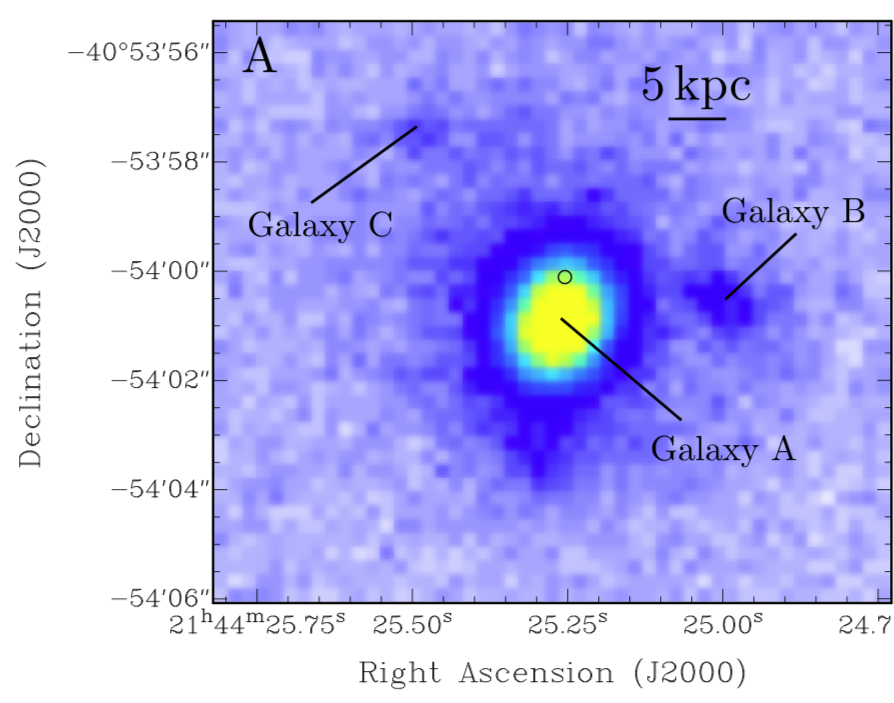

FRB 180924
Image from Bannister et al., 2019, Science, 365, 565
Summary
- Detected by: ASKAP-ICS
- FRB coordinates (RA, Dec): 21:44:25.26 -40:54:00.1 (J2000)
- Host coordinates (RA, Dec): 21:44:25.25 −40:54:00.8 (J2000)
- Redshift: 0.3212
- Observed DM: 361.42 pc cm-3
- Repeating: No
- References: 2019Sci...365..565B;
2020ApJ...895L..37B;
2020arXiv200513162D